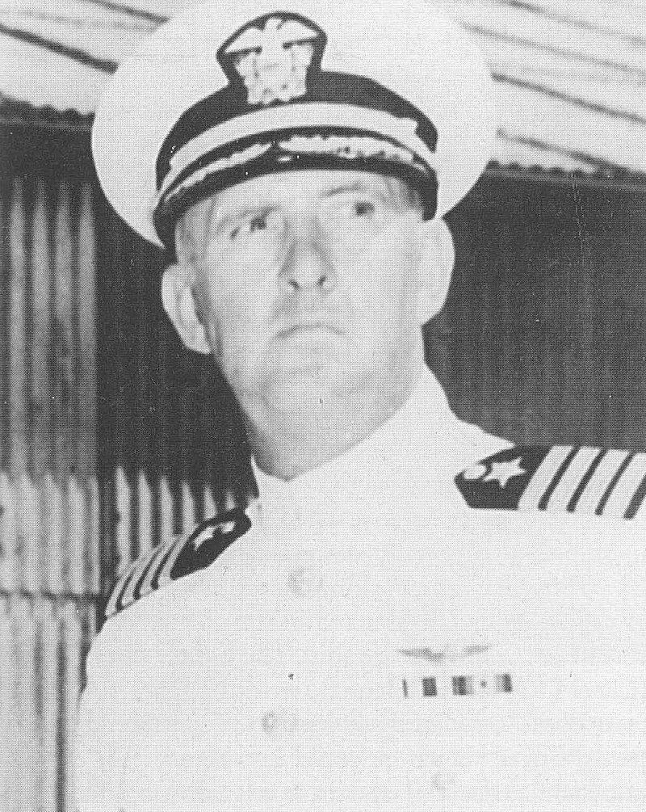
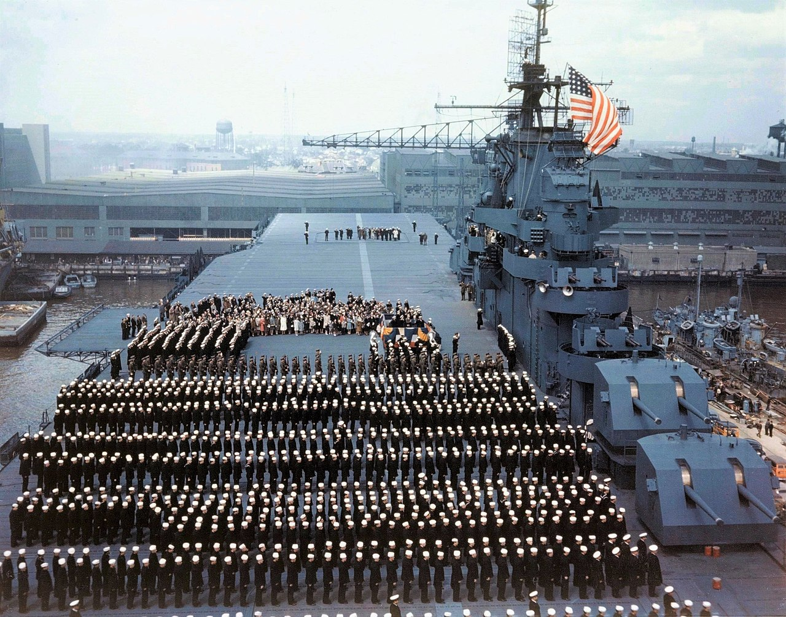
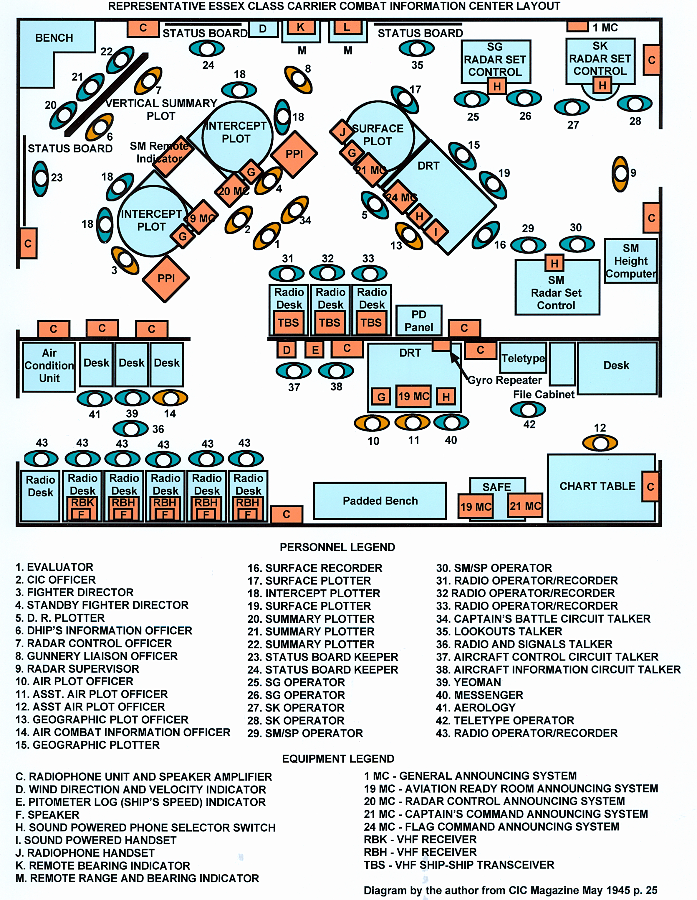
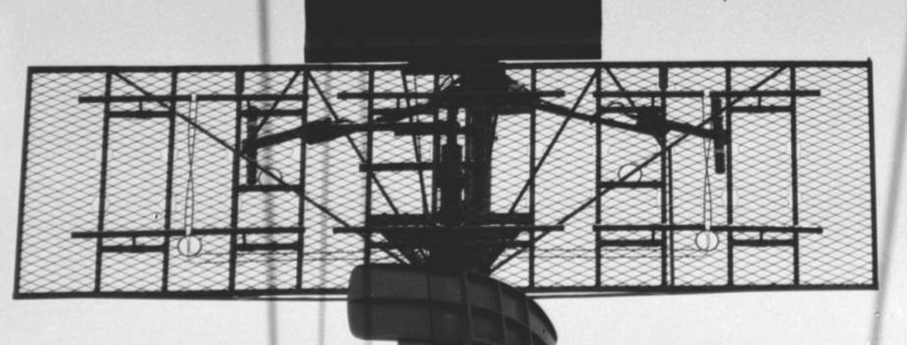
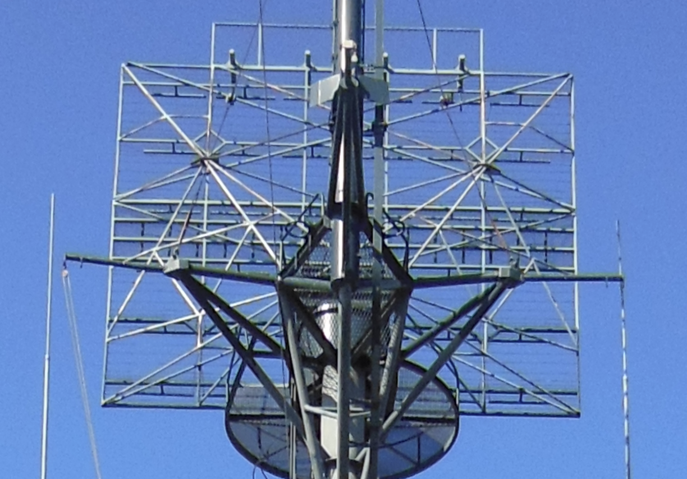
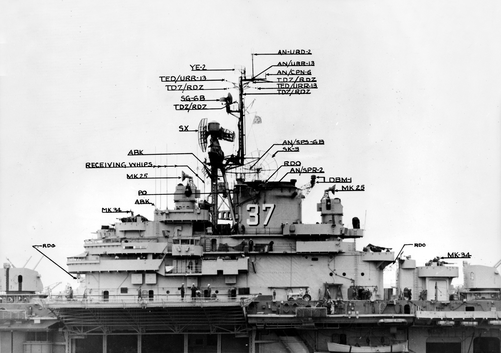

WW2의 IFF 이야기 (2) - 벅매스터 함장의 보고서
게시: 2024-11-28T06:30:22+09:00
<왜 CIC는 갑판 아래에 있는가?> 미드웨이 해전 직전에 벌어진 1942년 5월의 산호해 해전을 겪은 뒤 USS Yorktown의 함장 Buckmaster 대령은 2페이지짜리 보고서를 작성. 주된 내용은 항공모함 레이더 운용 시설에 대한 개선 방안으로서, CIC가 넓어야 한다는 것과 함께 대공 탐색 레이더는 1대로는 부족하고 2대를 갖춰야 한다는 것 등. 레이더를 2대 갖춰야 한다는 이유는 당시 요크타운의 레이더가 고장 나는 바람에 대혼란을 겪은 바 있었기 때문. "CXAM 레이더의 고장에 의한 피해는 레이더가 여전히 작동하는 다른 항공모함이 없었다면 재앙이 되었을 것입니다. 전투기 관제를 다른 레이더 장착 함정이 인계받거나 레이더 없는 항모에서 여전히 지휘할 수는 있지만, 어느 쪽도 항공모함의 자체 레이더 정보를 활용하는 전투기 관제만큼 효과적일 수 없습니다. 모든 항공모함에 두 개의 수색 레이더가 장착되는 것이 중요합니다."

(1941년 2월부터, 1942년 6월 미드웨이 해전에서 침몰할 때까지 USS Yorktown의 함장이었던 Elliott Buckmaster 대령. 원래 구축함 함장이었으나 도중에 항공대에 지원하여 훈련을 받고 1936년 47세의 나이로 조종사가 된 뒤 2년간 조종사로 복무한 이후 USS Lexington의 부함장이 됨. 미드웨이에서 승리했으나 요크타운을 상살한 벅매스터는 곧장 준장으로 승진했음. 그러나 이후 함정이나 함대의 지휘를 맡지는 못했고 준장 승진 이후 본토의 항공 학교에서 해군 조종사 양성의 책임을 맡음.)

(Essex급 정규항모 중 2번함인 USS Yorktown (CV-10)이 1943년 4월 15일 취역식을 치르는 모습. 아일랜드 위에 커다란 사각 철망이 달린 것이 보이는데, 그것이 SK-1 레이더. 원래 독립전쟁 당시 미해군 군함의 이름이었던 Bon Homme Richard라는 함명으로 건조 중이었으나, 미드웨이 해전에서 격침된 Yorktown (CV-5)를 기리기 위해 Yorktown으로 도중에 변경.) 벅배스터 뿐만 아니라 레이더를 운용한 전투를 해본 다른 함장들의 보고서는 모두 미해군 수뇌부에서 면밀히 검토했고, 그 결과는 당시 한창 건조 중이던 24척의 Essex급 정규 항모에 대부분 적용되었음. 특히 CIC의 위치에 대해서는 많은 논의가 있었는데, 정통파에서는 CIC가 기존에 임시로 설치했던 것처럼 군함의 상부구조물(superstructure)에 위치해야 한다고 주장. 이유는 함장이 있는 함교와 가까워야 한다는 것. 그러나 결국 CIC는 갑판 아래 장갑판으로 보호된 집중 방호 구역 (citadel)에 위치시키기로 함. 원래 집중 방호 구역으로 보호되는 곳은 탄약고와 기관부 등 주요부였는데, CIC도 그에 못지 않게 중요한 곳이었기 때문. 그런데 그 외에도 중요한 이유가 있었으니... 전에 CIC를 상부구조물에 두었더니 도움도 안되는 온갖 사람들이 괜히 들락거리며 질문을 해대는 바람에 관제 업무에 방해가 되었던 기억이 생생했기 때문. 이렇게 CIC를 집중 방호 구역으로 옮기는 것은 기존 전함과 순양함 등에서도 점진적으로 실시.

(Essex급 항모의 CIC 구조. 지도 펼칠 책상 둘 곳도 없었던 초기의 임시 CIC에 비하면 진짜 광장 수준임.) <2개의 레이더> 또한 벅매스터가 원했던 대로, 모든 항모들에는 레이더가 2대씩 설치됨. SK 레이더를 주력 대공 레이더로, 그리고 SC-2 또는 SG 레이더를 보조 대공 레이더로 한 것. 또한 이때부터 보기 어렵고 많은 계산이 필요했던 A-scope 대신 직관적인 PPI (Plan Position Indicator)가 설치되어 레이더 조작병의 부담을 줄여 주었고, 이들은 모드 전환에 따라 대공 탐색도 가능했고 수상 함정 탐색도 가능. PPI가 나오기 전 A-scope만 있을 때, 전투기 관제사는 A-scope에서 읽은 수치를 작도판 위에 표시한 뒤에야 관제 명령을 내릴 수 있었는데, 이젠 급할 때는 PPI 화면만 보고도 즉각 전투기들에게 관제 지시를 내리는 것이 가능해짐.

(이 사진은 1944년 10월 캘리포니아 Mare 섬 해군기지에 정박한 순양함 USS Astoria (CL-90)의 모습. 마스트 맨 위에 반원형으로 굽은 작은 SG 레이더가 달려 있고, 그 앞 약간 아래 쪽에 커다란 사각 철망 같은 안테나를 가진 SK-1 레이더가 달려있음.) SC-2 레이더는 아래 사진에서 보듯이 6개씩의 쌍극자(dipole)를 2줄로 가로로 늘어놓은 구조의 안테나를 사용. 방향성을 주기 위해 이 쌍극자들 뒤에는 커다랑 철창으로 된 reflector (야기 안테나 참조)를 설치.

(이 사진은 미해군 유조선인 USS Niobrara에 달린 SC-3 레이더. SC-3도 6개 다이폴이 2줄로 배치됨.) SK 레이더는 기본적으로 SC-2 레이더와 비슷한데, 6개씩의 쌍극자(dipole)를 6줄로 배치한 더 큰 안테나를 쓰고 더 높은 출력을 가지고 있어서 탐조 빔(beam)이 약간 더 좁고 (10도 정도) 탐색 거리도 약간 더 김.

(USS Texas에 장착된 SK-1 레이더. 쌍극자 6개씩이 6줄로 배치된 것이 보임. 저 사각형 철창이 reflector 역할을 하는데 저 사각형 철창의 가로변이 5.11미터. SK 레이더 체계의 전체 무게는 약 2.3톤인데, 그 중 가장 무거운 부품이 바로 저 안테나로서 무게가 1.1톤. 그러다보니 구축함에는 달지 않고 보통 항모나 전함, 아무리 작아도 순양함까지만 이 SK 레이더를 달았으며, 전쟁 기간 내내 250 세트 정도만 생산.)

(Essex급 항모 USS Princeton (CV-37)의 WW2 종전 이후의 모습으로서, SK-3 레이더의 parabolic 안테나와 함께 기타 SG-6B 등 다양한 레이더들과 안테나가 보임. SK-1 레이더까지는 커다란 사각형 철망 같은 구조의 안테나를 썼고, SK-2와 SK-3는 저렇게 오목한 접시형 parabolic 안테나를 사용. 프린스턴은 1945년 7월에야 진수되어 그 해 11월에 취역했으므로 WW2에는 참전할 기회가 없었고, 나중에 한국 전쟁과 베트남 전쟁에 참전. 상륙강습함(LPH)으로 개조하기 위해 내부를 대대적으로 개장하기도 했으나 결국 1970년 퇴역 이후 고철 처리.) 그런데 여기서 의문. 아래는 1944년 Casablanca급 호위항모 USS Kasaan Bay (CVE-69, 1만1천톤, 19노트)에 설치된 SK-1 레이더의 모습. 그런데 6 x 6 쌍극자가 늘어선 저 철망 위에 별도로 4개의 쌍극자가 별도의 작은 사각 프레임에 배치된 것이 보임. 게다가 6 x 6 쌍극자들은 모두 가로 방향인데, 저 꼭대기 4개의 쌍극자는 모두 세로 방향. 대체 저 추가적인 4개의 쌍극자는 무엇일까?

(노란 색 원 속의 저 세로로 돌려진 쌍극자 4개의 정체는?)
(다음 주에 계속)